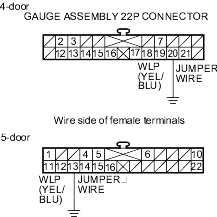
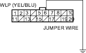

- Turn the ignition switch ON (II), start the engine, and watch the EPS indicator.
Does the EPS indicator come on?
YES - If the EPS indicator comes on and goes off, it's OK. If the EPS indicator stays on or blinks, go to step 9. 
NO - Go to step 2.
- Turn the ignition switch OFF, then ON (II) again, and watch the brake system indicator.
Does the brake system indicator come on?
YES - Go to step 3.
NO - Repair open in the indicator power source circuit.
- Blown No. 10 (7.5A) fuse.
- Open in the wire between the No. 10 (7.5A) fuse and gauge assembly.
- Open circuit inside the under-dash fuse/relay box.
- Turn the ignition switch OFF.
- Connect a jumper wire between the gauge assembly 22P connector terminal No. 20 (No. 13)* and body ground, then turn the ignition switch ON (II).

Does EPS indicator come on?
YES - Go to step 5.
NO - Inspect the EPS indicator bulb, if the bulb is OK, replace the bulb circuit board in the gauge assembly.
- Turn the ignition switch OFF.
- Disconnect the EPS control unit connector C (20P).
- Turn the ignition switch ON (II).
- Connect the EPS control unit connector C (20P) terminal No. 6 to body ground with a jumper wire.
EPS CONTROL UNIT CONNECTOR C (20P)

Does EPS indicator come on?
YES - Check for loose EPS control unit connectors. If necessary, substitute a known-good EPS control unit and retest.
NO - Repair open in the wire between the gauge assembly and EPS control unit.